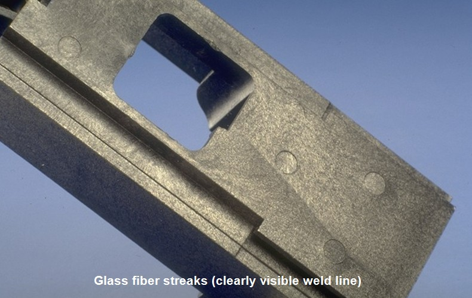

Afloramento de Fibra de Vidro

Esta não conformidade ocorre somente com materiais que tenham como reforço na sua composição fibra de vidro. O afloramento caracteriza-se como o alojamento da fibra de vidro na superfície do produto assim dando um aspecto fosco e poroso, neste caso péssimo para peças que têm exposição visual ou que passe por tratamentos superficiais como, por exemplo, pintura.